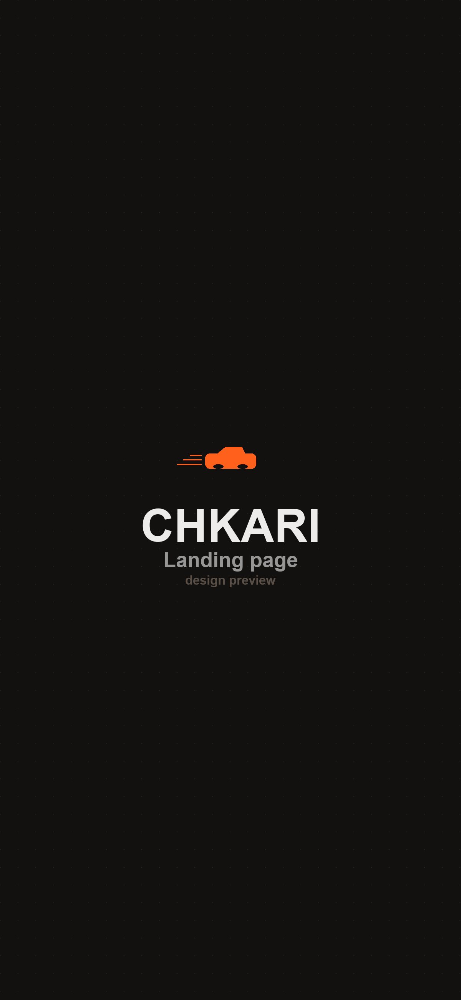
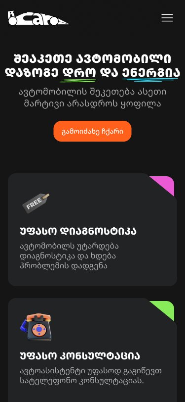
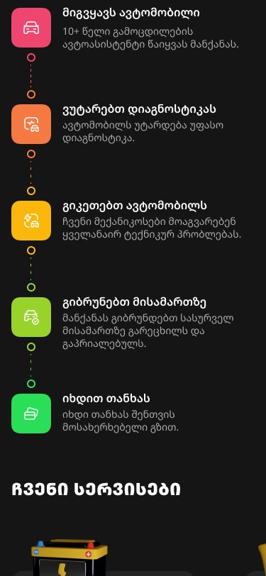
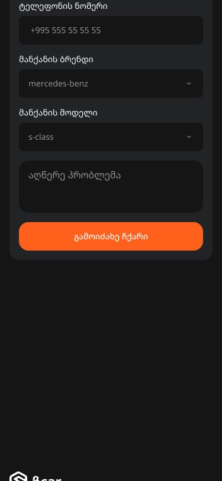

Product & marketing design for Chkari ("Fast") — a doorstep car-repair service for the Georgian market. It takes the single most distrusted transaction most people make — fixing their car — and rebuilds it around transparency: pickup, free diagnostics, live photo/video updates, insurance, and a guarantee, all from one form.

scrollCar repair is one of the last black boxes in everyday life. You hand over your car and your keys, you have no idea what's actually being done, the price appears at the end, and you can't tell a real fix from an invented one. In a market like Georgia's, where informal garages dominate, that distrust is the whole experience.
Chkari's bet: the winning feature isn't cheaper repair — it's visible repair. If a person can see their car being worked on, know the price up front, and never leave their home, trust becomes the product. My job was to make a landing page communicate that in the ten seconds before someone bounces.
I don't have half a day to sit at a garage and I never know if they're being honest with me.
Last time they replaced a part that was fine. I want to see the invoice and the actual problem.
Tamar drove the convenience story (one form, no garage, live updates); Levan drove the trust stack (insurance, guarantee, transparent invoice). Every section of the page speaks to one or both.
The heart of the page. A distrusted, opaque process is reframed as five clear, watchable stages — so before a visitor even reads the features, they already understand the entire journey.
A driver with 10+ years' experience picks the car up from your address.
→The car gets a full, free diagnostic so the real problem is identified.
→Certified mechanics resolve every technical issue found.
→The car comes back to your address — cleaned and polished.
→Settle up whichever way is easiest for you — only after it's done.
→Everything that turns "some stranger has my car" into "I can see exactly what's happening." These six promises are the real product, and the page gives each its own visible commitment:
Every car is diagnosed first — you find out the real problem at no cost.
An auto-assistant advises you over the phone before anything begins.
You're kept informed at every stage with photos and video of your car.
Warranty on both the replaced parts and the quality of the repair.
Your car is fully insured the entire time it's in Chkari's hands.
A detailed, itemized invoice of exactly what was repaired and why.
The service is booked from a single lead form, so the whole page had to hold up from a 1920px desktop hero down to a 375px phone — same story, re-flowed for each hand. I designed and handed off all three breakpoints.



There's no signup, no dashboard, no app — the whole conversion is one honest form: name, phone, car brand, car model, describe the problem. That's a deliberate call. For a first-time, nervous user, every extra field is a reason to leave; five fields and a callback promise ("our rep will contact you shortly") is the lowest-friction path from "my car's making a noise" to "someone's handling it."
Confident dark surfaces, a single high-energy orange that reads as speed and action, and a set of category colors for the service icons. Below isn't a screenshot — it's Chkari's token set and core components rebuilt in live code, in the real Noto Sans Georgian type: click a swatch to copy its hex, focus the input, press the button.
| შეაკეთე ავტომობილი | Bold · 40 / display |
| დაზოგე დრო და ენერგია | Medium · 16 / body |
| უფასო დიაგნოსტიკა | Regular · 14 / caption |
Why this matters: the booking form is the entire funnel, so its inputs and the orange CTA had to be flawless. Every state above — hover, press, focus, disabled — matches the handoff spec, rendered in the product's real Georgian type.
The live photo/video tracking is Chkari's killer differentiator, but on the landing page it's described more than shown. If I revisited it, I'd prototype that tracking experience — a mock "your car is at stage 3" status view — and put it front and center, because seeing the transparency is far more convincing than reading about it. And I'd add real customer proof: this industry converts on trust, and nothing builds trust like other people's before/after stories.
Have a project in mind? I'd love to hear about it.